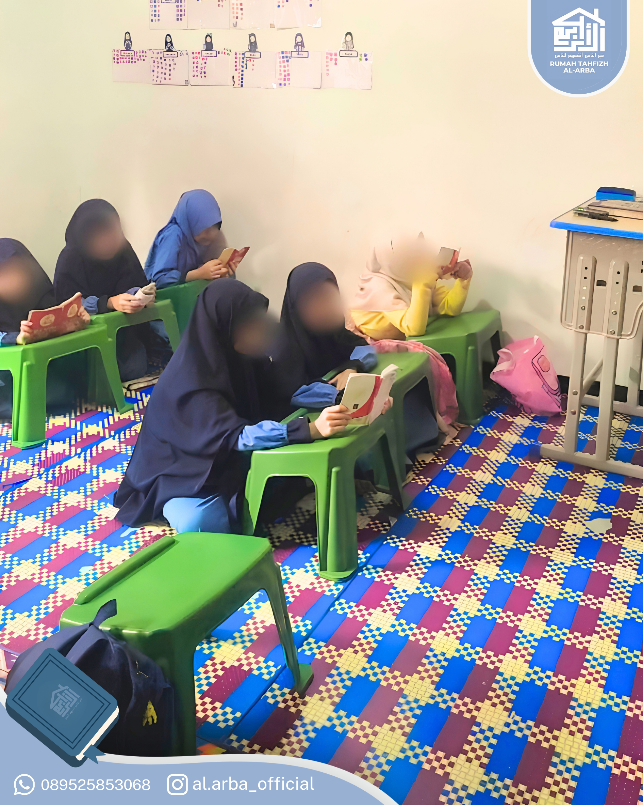
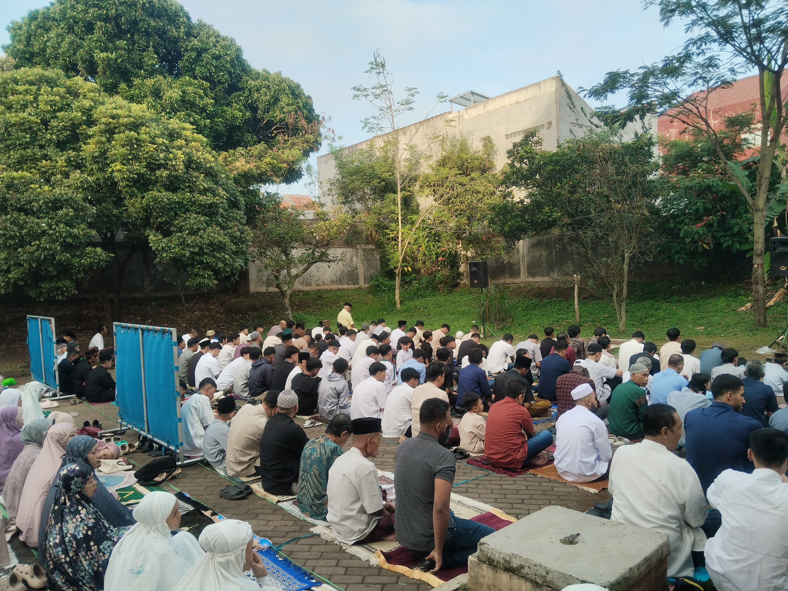
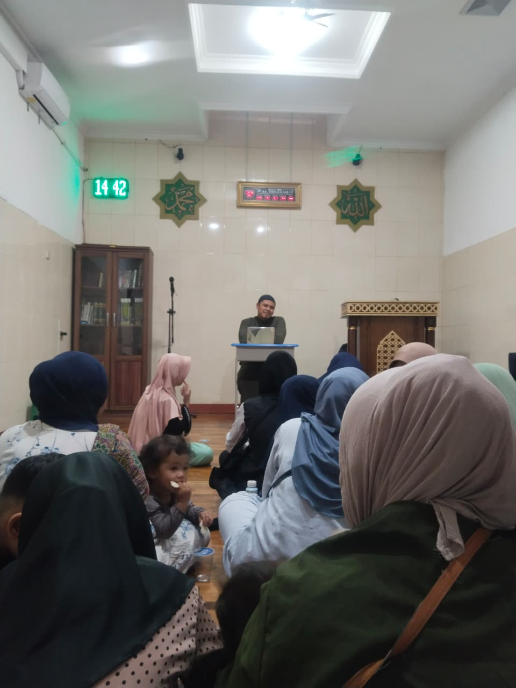

Mewujudkan Generasi Qur'ani yang Bertakwa kepada Allah
Rumah Tahfidz Al Arba' adalah lembaga sosial yang berfokus pada pendidikan Tahfizh Al-Qur’an, perbaikan bacaan (tahsin), dan kelancaran pelafalan huruf hingga fasih bagi anak-anak dan remaja usia sekolah.
Pendidikan Al-Qur'an Berbasis Pembinaan Karakter
Sebagai Rumah Tahfizh pelopor di lingkungan RW 12 Kelurahan Dago, Kecamatan Coblong, Rumah Tahfizh Al Arba' berkomitmen membimbing santri secara bertahap mulai dari pengenalan huruf dasar hingga pelafalan ayat yang tartil dan indah.
Growth Point & Kepercayaan Masyarakat:
Seiring meningkatnya kepercayaan masyarakat akan pentingnya pendidikan Al-Qur'an, kelas kini berkembang menampung lebih dari 60 santri (usia TK hingga SMA). Demi menjaga kualitas dan kredibilitas, diselenggarakan program Ujian Tasmi’ secara berkala (1 juz sekali duduk).
Visi & Misi Al Arba
Visi
Mencetak generasi penghafal Al-Qur’an yang unggul dan berakhlaqul karimah.
Misi Utama
- Membudayakan kebiasaan membaca & menghafal Al-Qur’an;
- Meningkatkan kefasihan dalam membaca Al-Qur’an;
- Menumbuhkan semangat mengimplementasikan Al-Qur’an dalam kehidupan harian.
Tingkatan Kelas Pembelajaran
Dirancang secara bertahap sesuai dengan kemampuan dan tingkat perkembangan santri
1. Kelas Iqro
Tahap awal belajar membaca. Santri dikenalkan pada huruf hijaiyah, harakat dasar (fathah, kasrah, dammah), serta merangkai huruf menjadi kata secara bertahap sebagai pondasi sebelum mendalami tajwid.
2. Kelas Tahsin
Tahap membaguskan dan meyakinkan bacaan. Fokus pada ketepatan bunyi huruf (makharijul huruf), hukum panjang pendek (mad), dan tajwid dasar (ghunnah) agar membaca Al-Qur'an secara tartil dan benar.
3. Kelas Tahfizh
Tahap hafalan mendalam. Santri yang bacaannya sudah baik difokuskan pada kelancaran setoran hafalan surat baru (ziyadah) dan pengulangan hafalan lama (muraja'ah) secara konsisten.
Galeri & Dokumentasi Kegiatan
Suasana pembelajaran dan pembinaan santri di Rumah Tahfidz Al Arba

Pembelajaran Tahfidz & Kegiatan Harian

Kegiatan Sosial & Pengabdian

Upgrading & Pembinaan Pengajar
Rumah Tahfidz Al Arba
Jl. Sangkuriang Dalam No. 40/160A, Kelurahan Dago, Kecamatan Coblong, Kota Bandung, Jawa Barat 40135.
0822 1674 5411 / 0851 7407 5889
alarbaofficial@gmail.com
Portal Akses Terintegrasi
Orang Tua / Wali Santri & Guru Pengajar dapat memantau serta menginput perkembangan santri via Portal Akses.